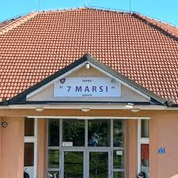
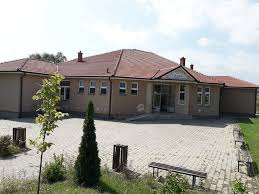

Biografia Ime
Unë jam Ensar Gashi kam 13 vjet. Jam nga qyteti i Vushtrrisë, mësoj në shkollën "7 MARSI" Në Bukosh. Më pëlqen të luaj futboll dhe të programoj, tani për tani jam duke e kryer kursin e CTA-së në këtë kurs ne mësojm të programojmë.

